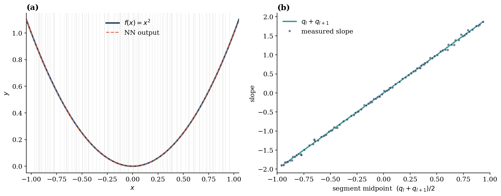
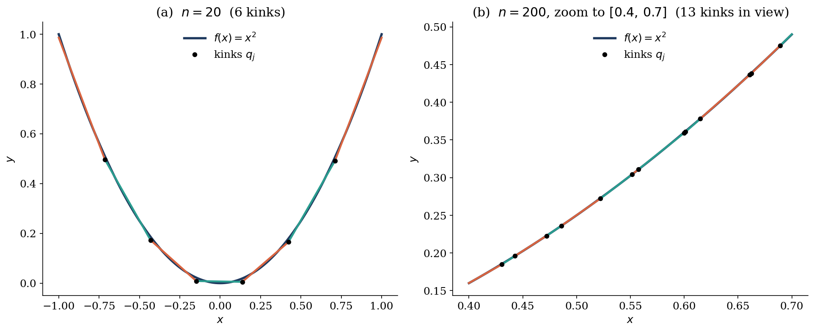

How a 1-hidden-layer ReLU network learns a continuous function
The universal approximation theorem says that a network with a single hidden layer can approximate any continuous function arbitrarily well, given enough neurons. The classical proofs (Cybenko, Hornik) are abstract. Here is a concrete, geometric construction that explains how the network does it, in the simplest case: a $(1, n, 1)$ network with ReLU activation, learning a continuous function $f: [a, b] \to \mathbb{R}$.
Setup
Let the hidden-layer weights and biases be $w^{(1)}_j, b^{(1)}_j$ and the output-layer weights $w^{(2)}_j, b^{(2)}_j$, for $j = 1, \dots, n$. Each hidden neuron computes
$$h_j(x) = \mathrm{ReLU}\big(w^{(1)}_j x + b^{(1)}_j\big).$$
Define the kink point $q_j$ of neuron $j$ by $w^{(1)}_j q_j + b^{(1)}_j = 0$, i.e.
$$q_j = -\frac{b^{(1)}_j}{w^{(1)}_j}.$$
Without loss of generality take $w^{(1)}_j = 1,\ b^{(1)}_j = -q_j$ so $h_j(x) = \mathrm{ReLU}(x - q_j)$.
Two neurons make a ramp
Take two neurons $j, k$ with $q_j < q_k$. Then
- $x < q_j$: $h_j(x) = h_k(x) = 0$
- $q_j \le x \le q_k$: $h_j(x) = x - q_j,\ h_k(x) = 0$
- $x > q_k$: $h_j(x) = x - q_j,\ h_k(x) = x - q_k$
Couple their output weights with opposite signs and equal biases:
$$w^{(2)}_k = -w^{(2)}_j =: w_{(j,k)}, \qquad b^{(2)}_j = b^{(2)}_k =: \tfrac{1}{2} b_{(j,k)}.$$
Their summed contribution to the output is
$$y_{(j,k)}(x) = w_{(j,k)} \big[h_j(x) - h_k(x)\big] + b_{(j,k)},$$
which evaluates to a "ramp":
$$y_{(j,k)}(x) = \begin{cases} b_{(j,k)}, & x < q_j \\ w_{(j,k)}(x - q_j) + b_{(j,k)}, & x \in [q_j, q_k] \\ w_{(j,k)}(q_k - q_j) + b_{(j,k)}, & x > q_k. \end{cases}$$
So a pair of ReLU neurons produces a function that is constant on $(-\infty, q_j)$, linear on $[q_j, q_k]$ with slope $w_{(j,k)}$, and constant again on $(q_k, \infty)$. Each such pair owns one linear segment.
Stitching pairs into a piecewise-linear approximation
Partition $[a, b]$ into $m = n/2$ equal sub-intervals of width $\delta = (b - a)/m$. For the $l$-th interval $[a + (l-1)\delta,\ a + l\delta]$, dedicate the pair $(2l-1, 2l)$ with
$$q_{2l-1} = a + (l-1)\delta, \quad q_{2l} = a + l\delta,$$ $$w_{(2l-1, 2l)} = \frac{f(a + l\delta) - f(a + (l-1)\delta)}{\delta}.$$
That is, set the slope of pair $l$ to the secant slope of $f$ on its interval. Each pair contributes the constant $w_{(2l-1, 2l)} \cdot \delta = f(a + l\delta) - f(a + (l-1)\delta)$ to the right of its interval. Telescoping over all pairs, for $x \in [a + (l-1)\delta,\ a + l\delta]$ the network output is
$$\sum_{l'=1}^{m} y_{(2l'-1,\, 2l')}(x) = f(a + (l-1)\delta) - f(a) + w_{(2l-1, 2l)}\big(x - a - (l-1)\delta\big) + \sum_{l'=1}^{m} b_{(2l'-1,\, 2l')}.$$
Choose the global offset $\sum_{l'} b_{(2l'-1,\, 2l')} = f(a)$ (e.g. put it all on the first pair) and the right-hand side becomes the linear interpolant of $f$ between its endpoint values on the $l$-th interval. As $\delta \to 0$ the piecewise-linear approximation converges uniformly to $f$. Continuous functions are well approximated by piecewise-linear ones, and ReLU networks are piecewise-linear by construction — that is the entire trick.
Does a trained network actually do this?
The construction above is a hand-built solution. A real network found by gradient descent need not parameterize itself this way. But the geometric claim is testable: after training, the network output should be piecewise-linear, with kinks exactly at $q_j = -b^{(1)}_j / w^{(1)}_j$, and the slope on $[q_l, q_{l+1}]$ should equal the secant slope of the target on that interval.
I trained a $(1, 200, 1)$ ReLU network with Adam for 20 000 steps to fit $f(x) = x^2$ on $[-1, 1]$, then read off all $q_j$ and the slope of each segment between consecutive kinks.

Two things to notice. First, the kinks distribute roughly uniformly on $[-1, 1]$ — which is exactly the optimal density for a function of constant curvature, since the optimal kink density for piecewise-linear approximation scales as $|f''|^{1/3}$, and $f''(x) = 2$ here. Second, the measured slopes lie on the line $y = 2 \cdot \text{midpoint}$ to within ~1.6% median error, confirming each segment is the chord of $x^2$ on $[q_l, q_{l+1}]$. The trained network has, in effect, discovered the construction above.
Half of the neurons place their kink outside $[-1, 1]$ and contribute only a linear function on the input domain. They do not waste capacity — they collectively account for the global offset and tilt of the approximation — but in a finite-data regime they are not where the model puts its representational power.
Seeing the strategy directly
The cleanest way to confirm the chord-by-chord picture is to plot, for each pair of adjacent kinks $(q_l, q_{l+1})$, the line that the network actually computes on that segment, and overlay $f(x) = x^2$. To make individual segments visible, I trained a smaller network ($n = 20$) and also include a zoom into a $(n = 200)$ network for comparison.

Why this is a useful picture
Stating universal approximation as "a smooth function is the limit of its piecewise-linear interpolants, and a ReLU network is exactly a piecewise-linear function" makes the result feel almost trivial — and it is, in 1D. The depth and difficulty in higher dimensions come from how kinks combine across multiple input axes, and from how compositional depth lets the number of linear regions grow exponentially with depth. But the 1D picture is the right starting intuition: the network is bending a continuous piecewise-linear surface to match data, one kink at a time.